宋夏竦撰。竦字子喬。江州德安人。景德三年。舉賢良方正。官至武寧軍節度使。諡文莊。事蹟具宋史本傳。據吾衍學古編。稱夏竦古文四聲韻五卷。前有序併全銜者好。別有僧翻本。不可用。又據全祖望鮚崎亭集。有是書跋。稱借鈔於范氏天一閣。爲紹興乙丑浮屠寶達重刊。蓋卽吾衍所謂僧翻本也。此本從汲古閣影寫宋刻翻雕。有慶歷四年竦自序。卷首題開府儀同三司。行吏部尚書。知毫州軍州事。夏竦集。是吾衍所謂前有序及全銜者矣。其書以四聲分隸古篆。全祖望跋。稱所引遺書八十八家。以校郭氏汗簡。未嘗多一種。實卽取汗簡而分韻錄之。絕無增減異同。雖不作可也。其說固是。然汗簡以偏旁分部。而偏旁又全用古文。不從隸體。猝不易尋。此書以韻分字。而以隸領篆。較易於檢閱。此如旣有說文。而徐鍇復作篆韻譜。相輔而行。固未可廢其一也。惟其書由雜綴而成。多不究六書之根柢。如寴卽古親字也。親字下旣云古尚書作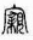。又別出一𥨾字。譌從宀爲從穴。云卽古雲字也。雲字旣云說文作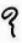。云字下又云王存乂切韻作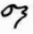。䀠卽古瞿字也。䀠字下引汗簡作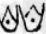。瞿字下又引崔希裕纂古作𥉁。以及朝鼂聞闅協叶之類。不可殫數。龕字引古尚書。是西伯戡黎之戡。古字通也。乃不併於戡字。而自爲一條。是由不知古文。誤以一字爲二也。澄卽澂字之別體。澄字下引雲臺碑作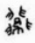。澂字下引王庶子碑作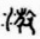。彩卽采字之別體。采字下引雲臺碑作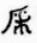。彩字下引義雲章作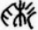。以及桐𣑸崇崈窺闚謩謨仙僊員圓熙𤌇奉捧准準帽冒𥪰競之類。不可殫數。是又由不辨俗書。誤以一字爲二也。覃韻之函。乃函蓋字。咸韻之函。乃函谷字。而竝引南岳碑作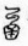。仙韻之鮮。乃腥鮮字。於古當從三魚。獮韻之鮮。乃鮮少字。於古當從是從少。乃竝云古老子作鱻。顏黃門說作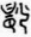。古尚書作鱻。說文訓㠩爲大。訓荒爲荒蕪。本爲兩字。而以古尚書之荒字。籀韻之㠩字。竝列荒字下。是不辨音義。以二字合爲一也。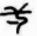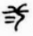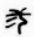亖字。竝出說文。乃惟云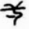字出說文。字。則云出貝邱長碑古老子。亖字。則云出天台經幢。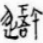字出石鼓文。乃云出王存乂切韻。鎦字出說文。庿字出儀禮。灋字䱷字飌字簭字。出周禮。乃竝云出崔希裕纂古。㳅字出荀子公羊傳。乃云出古文。是不求出典。隨所見而捃摭也。簣字說文本作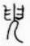。乃云出唐韻。夢字說文本作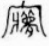。乃云出汗簡。燒字說文本作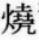。乃云出崔希裕纂古。以及兮回冰井丑志之類。全與說文相同者。亦不可殫數。是併不辨小篆也。至於室字。云季札墓銘作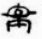。季札墓銘無室字。怕字云古孝經作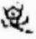。古孝經無怕字。益杜撰矣。他如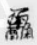鱻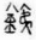銕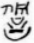諐之類。相連竝立。猶云一篆文一改篆爲隸也。至保字下云崔希裕纂古作保。鴈字下云籀韻作鴈。則全作隸書。點畫不異。更不解其何故。讀是書者。亦未可全據爲典要也。所列韻目。據自序云本唐切韻。仙韻下增一宣韻。與徐鍇韻譜同。覃談二韻。列於麻後陽前。蒸登二韻。列於添後咸前。與顏元孫干祿字書同。蓋唐制如是。至齊韻之後。佳韻之前。增一栘韻。與二書文不同。殆唐韻亦非一本歟。是則不可考矣。